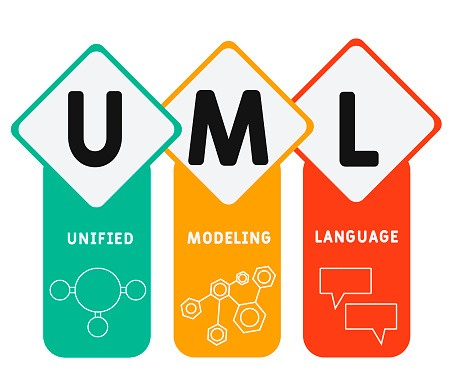

In programming, an algorithm is a step-by-step procedure or a set of rules that must be followed to perform a specific task or solve a particular problem. It serves as a blueprint for writing code to accomplish a well-defined objective. Algorithms in programming are crucial for designing efficient and effective solutions to various computational problems.
Logical structures refer to the organization and arrangement of ideas, information, or arguments in a way that follows a logical sequence or pattern. These structures are essential for effective communication, problem-solving, and reasoning. Various types of logical structures are commonly used in fields such as mathematics, computer science, philosophy, and linguistics.
Ideas or steps are presented in a chronological order or a step-by-step sequence. This structure is common in procedural writing and instructions.
Information is organized in a top-down or bottom-up fashion, showing the relationships between general categories and specific subcategories. It's often depicted as a tree diagram.
Ideas are presented with equal importance and are usually connected by coordinating conjunctions. This structure is common in lists and comparisons.
Describes cause-and-effect relationships. It explains how one event or condition leads to another.
Identifies a problem and then presents one or more solutions to address the issue. This structure is often used in persuasive writing or proposals.
Highlights the similarities and differences between two or more items, concepts, or ideas. This structure is common in analytical writing.
When designing algorithmic structures in programming, diagrammatic representations can help visualize the flow and logic of the algorithm. Flowcharts and pseudocode are two common forms of diagrammatic structures used in algorithm design
When designing algorithmic structures in programming, diagrammatic representations can help visualize the flow and logic of the algorithm. Flowcharts and pseudocode are two common forms of diagrammatic structures used in algorithm design.
Shapes: Flowcharts use different shapes to represent different elements of an algorithm. For example:
Structured English-like Language: Pseudocode is a way of expressing the logic of an algorithm using a simple, high-level, and human-readable syntax. It is not tied to the syntax of any specific programming language. Keywords: Common pseudocode keywords include IF-THEN-ELSE, WHILE, FOR, and FUNCTION.
Class Diagrams: UML can be used for diagramming object-oriented algorithms, showing classes and their relationships. Activity Diagrams: Activity diagrams in UML can be used to represent the flow of activities or actions within an algorithm.
Processes and Data Flow: DFDs are useful for representing how data flows through a system or algorithm, showing processes and data stores. Arrows: Arrows indicate the direction of data flow.
When designing diagrammatic structures, it's essential to keep them clear, concise, and easy to understand. Choose the representation that best fits the complexity of your algorithm and the preferences of your audience. Diagrams can be valuable tools during the initial design phase, aiding in communication and collaboration among team members.